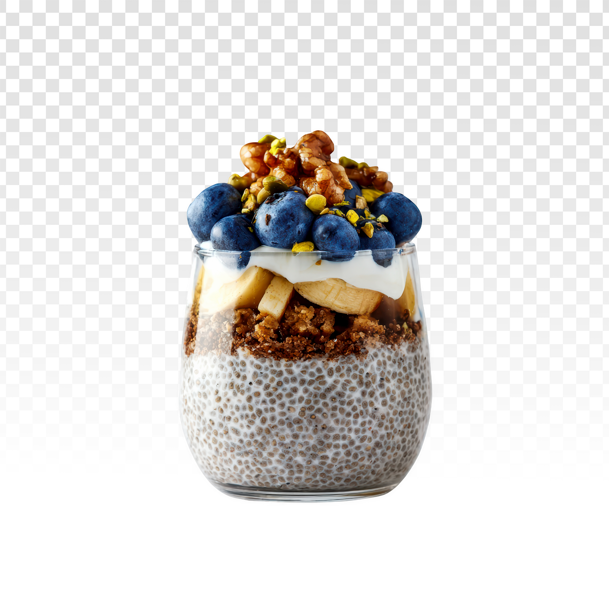

Chia Pudding
Back to Homepage

Description
Chia pudding is a delicious and nutritious dessert made from chia seeds soaked in liquid,
typically milk or a dairy-free alternative. The chia seeds absorb the liquid and create a
gel-like consistency, resulting in a creamy and satisfying pudding. It can be flavored with
various ingredients such as vanilla, cocoa, or fruit, making it a versatile and healthy treat.
Ingredients
- 1/4 cup chia seeds
- 1 cup milk (dairy or plant-based)
- 1 tablespoon sweetener (honey, maple syrup, or agave)
- 2 tablespoons of Greek yogurt
- 2 tablespoons of granola
- A handful of blueberries
- Half a sliced banana
- 1 tablespoon of walnuts
- 1 tablespoon of crushed pistachios
Steps
- In a bowl, combine the chia seeds, milk, and sweetener. Stir well to ensure the chia seeds are evenly distributed.
- Cover the bowl and refrigerate for at least 4 hours or overnight. This allows the chia seeds to absorb the liquid and thicken into a pudding-like consistency.
- Before serving, give the chia pudding a good stir to break up any clumps. If it's too thick, you can add a little more milk to achieve your desired consistency.
- Top with Greek yogurt, granola, blueberries, sliced banana, walnuts, and crushed pistachios for added flavor and texture.
- Enjoy your delicious and nutritious chia pudding!